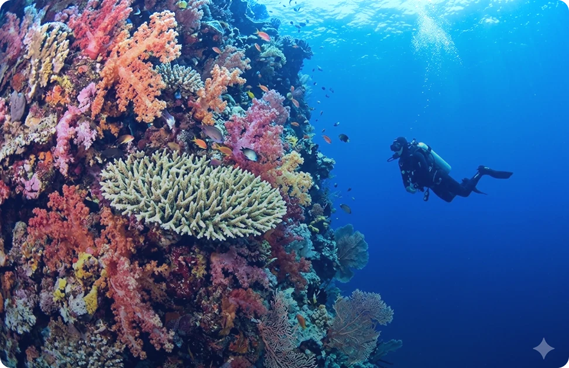
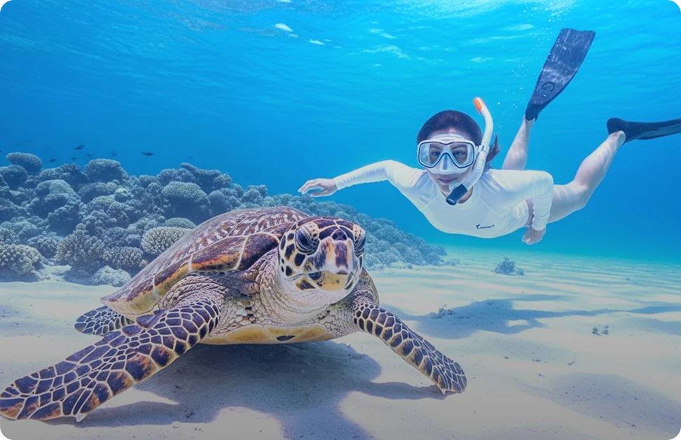
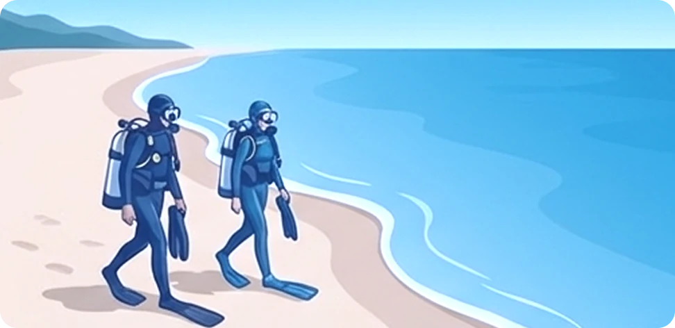
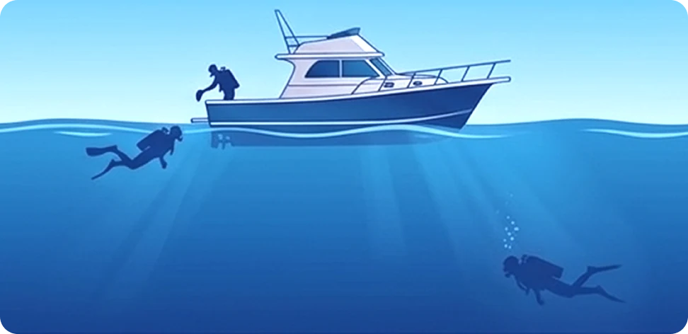
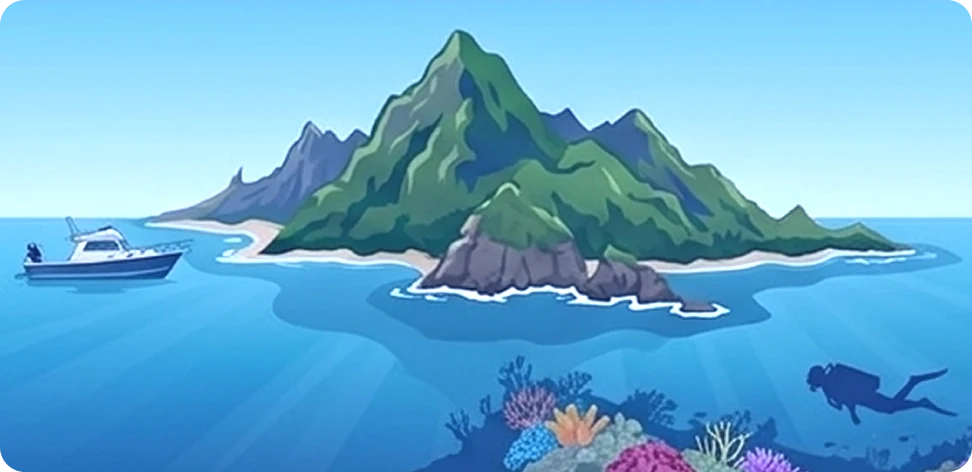
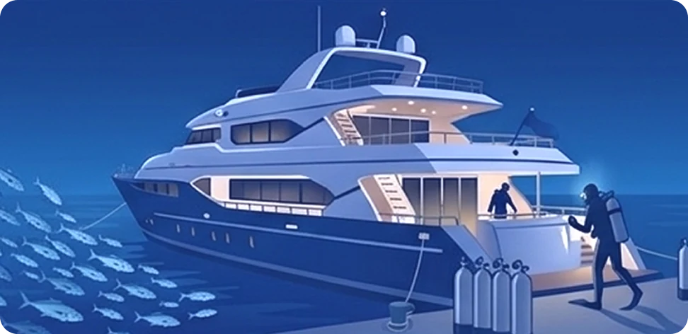

Discover the Unseen
70% of Our Planet.
from Diving Under the Deep Sea
다이빙은 단순한 스포츠를 넘어, 새로운 세상과의 조우입니다.
다이빙의 첫 시작부터 배움, 탐험의 모든 여정까지
BlueBuddy가 자세히 안내해 드릴게요.
Breaking the Fear
수영을 못해도 괜찮을까?
숨은 어떻게 쉬지?
고민은 잠시 내려놓으셔도 좋습니다.
모든 전설적인 다이버들도 당신과 같은 궁금증에서 시작했습니다.
물과 친하지 않아도 괜찮아요, 바다는 누구에게나 열려 있으니까요.
-
수영을 못하는데 다이빙을 할 수 있을까요?
다이빙은 '헤엄'이 아니라 '적응'과 '호흡'의 스포츠입니다.
장비의 힘:수영은 맨몸으로 물을 이겨내야 하지만, 다이빙은 전용 장비의 도움을 받습니다. 오리발(Fin)은 적은 힘으로도 강력한 추진력을 만들어주고, 마스크(Mask)는 물속에서도 지상처럼 선명한 시야를 보장합니다.
부력의 마법:물속에서는 부력 조절 기구(BCD)나 호흡을 통해 몸을 자유롭게 띄우거나 가라앉힐 수 있습니다. 가만히 있어도 물에 둥둥 뜰 수 있다는 사실을 체감하는 순간, 물에 대한 공포는 금세 경이로움으로 바뀝니다.
수영 실력보다 중요한 것:다이빙에서 필요한 것은 빠른 속도가 아니라 물속에서의 편안함입니다. 수영 선수처럼 팔을 젓지 않아도, 장비와 하나가 되는 법만 익히면 누구나 바다를 유영할 수 있습니다.
-
코에 물이 들어오거나 숨이 막히면 어쩌죠?
입으로 하는 '가장 정직한 호흡'을 배우게 됩니다.
마스크의 완벽한 보호:다이빙 전용 마스크는 눈뿐만 아니라 코까지 실리콘으로 부드럽고 밀착되게 감싸줍니다. 코로 물이 들어올 틈이 없으니 안심하세요.
호흡의 자유:스쿠버 다이빙은 호흡기(Regulator)를 통해 지상에서처럼 끊김 없이 숨을 쉴 수 있고, 프리다이빙은 스노클(Snorkel)을 통해 수면에 엎드린 채 편안하게 호흡합니다.
평온의 리듬:입으로 천천히, 깊게 숨을 들이마시고 내뱉는 리듬에 집중해 보세요. 어느덧 거친 숨소리는 사라지고, 세상에서 가장 고요하고 평온한 나만의 명상 시간을 갖게 될 것입니다.
-
다이빙은 위험하고 어려운 운동 아닌가요?
체력보다 '심리적 여유'와 '함께하는 신뢰'가 핵심입니다.
버디 시스템(Buddy System):다이빙은 절대 혼자 하는 고립된 운동이 아닙니다. 숙련된 강사나 믿음직한 버디(Buddy)가 항상 곁에서 당신의 공기 잔량과 상태를 체크합니다. 서로를 돌보는 이 시스템이 다이빙을 가장 안전한 레저로 만듭니다.
단계별 적응 교육:처음부터 깊은 바다에 빠뜨리지 않습니다. 발이 닿는 얕은 수영장에서 물과 친해지는 법부터 차근차근 배운 뒤, 준비가 되었을 때 비로소 푸른 바다로 나갑니다.
바다의 리듬에 맡기기:다이빙은 격렬하게 움직이는 운동이 아닙니다. 오히려 힘을 빼고 바다의 흐름에 몸을 맡길 때 가장 즐겁습니다. 강박을 내려놓고 자연의 속도에 맞춰 움직이는 법을 배우는 힐링의 과정입니다.
-
귀가 아프면 어쩌죠?
비행기를 탔을 때처럼 '압력 조절'만 해주면 통증 없이 편안합니다.
이퀄라이징(Equalizing):수심이 깊어지면 수압 때문에 귀가 먹먹해질 수 있지만, 코를 잡고 가볍게 '흥!' 하고 바람을 넣어주는 간단한 동작 하나면 즉시 해결됩니다.
아프기 전에 미리:통증이 느껴진 후에 하는 것이 아니라, 물속으로 내려가기 시작함과 동시에 미리미리 이퀄라이징을 해주는 습관을 배웁니다.
천천히 내려가기:귀가 예민하다면 속도를 늦추면 됩니다. 강사와 버디는 당신이 편안해질 때까지 충분히 기다려 줄 준비가 되어 있습니다.
-
물속에서 정신을 잃거나 사고가 나면 어쩌죠?
다이빙은 철저한 '안전 시스템' 위에서 이루어지는 레저입니다.
2인 1조 버디 시스템:다이빙의 황금률은 '절대 혼자 들어가지 않는다'는 것입니다. 숙련된 강사와 당신을 지켜줄 버디(Buddy)가 항상 1m 이내 거리에서 당신의 눈을 맞추고 호흡과 상태를 체크합니다.
사전 체크와 교육:물에 들어가기 전, 장비에 이상은 없는지 서로의 상태는 어떤지 확인하는 '버디 체크'를 반드시 거칩니다. 또한 돌발 상황에 대비한 긴급 대응 기술을 수영장에서 완벽히 익힌 뒤에야 바다로 나갑니다.
신호의 약속:물속에서는 말을 할 수 없기에 명확한 수신호로 소통합니다. 조금이라도 불편함이 느껴지면 즉시 신호를 보내고, 즉각적인 도움을 받을 수 있는 체계적인 환경이 갖춰져 있습니다.
Find your Blue
당신은 느긋한 탐험가인가요,
자유로운 도전가 인가요?
두 방식 모두 바다를 사랑하는 방법이지만, 즐기는 방식은 확연히 다릅니다.
나에게 더 설레는 쪽을 골라보세요.

Scuba Diving
Free DivingInto the Blue
모험을 즐기시나요,
아니면 평온함을 원하시나요?
물 속 세상으로 들어가는 문은 생각보다 다양합니다.
당신을 가장 설레게 할 입구를 골라보세요.

비치 다이빙 (Beach Diving)
해변(비치)에서부터 장비를 착용하고 직접 걸어 들어가는 방식입니다.
수심이 서서히 깊어지기 때문에 초보자들이 심리적 안정감을 느끼며 적응하기 좋고,
수중 지형을 살피며 천천히 입수할 수 있는 장점이 있습니다.
'해안 다이빙'이라고도 불립니다.

보트 다이빙 (Boat Diving)
배를 타고 다이빙 포인트로 이동한 뒤, 배 위에서 바로 물속으로 뛰어드는 방식입니다.
해변에서 멀리 떨어진 아름다운 산호초나 수심이 깊은 곳을 탐험할 때 주로 이용하며, 입수 후 바로 목표 수심까지 도달할 수 있어 효율적입니다.

섬 다이빙 (Island Diving)
섬을 거점으로 주변에서 진행하는 다이빙입니다.
보통 섬에 머물며 보트로 짧게 이동하여 섬 근처 포인트에서 입수하는 형태를 말합니다. 섬 특유의 수려한 수중 경관과 독특한 연안 생태계를 즐기기에 최적화된
방식입니다.

리브어보드 (Liveaboard)
'배 위에서 먹고 자며(Live-on-board)' 다이빙을 즐기는 전용 크루즈 투어입니다.
일반적인 보트로 가기 힘든 먼바다의 최상급 포인트를 탐험할 수 있으며, 하루 3~4회 이상의 무제한 다이빙이 가능합니다. 숙식과 다이빙이 한 배에서 이루어지는
다이버들의 '꿈의 다이빙' 형태입니다.
UnderWater Adventure
바닷속은 그저 평범한 모래바닥이 아닙니다.
단순히 물속에 들어가는 것을 넘어, 자연이 깎아 만든 수중 예술품들을 감상해 보세요.
평생 잊지 못할 푸른 풍경이 눈 앞에 펼쳐집니다.
Choice your Attractions
4가지 테마와 난이도로 구별된 바닷 속 어트랙션을 탐험해 보세요.